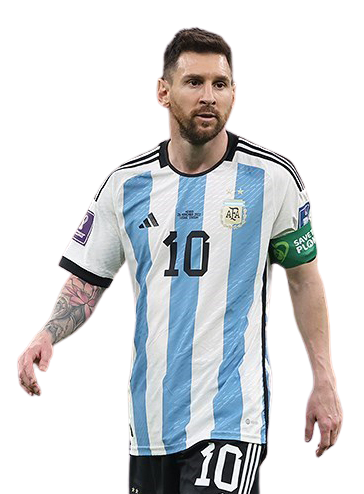
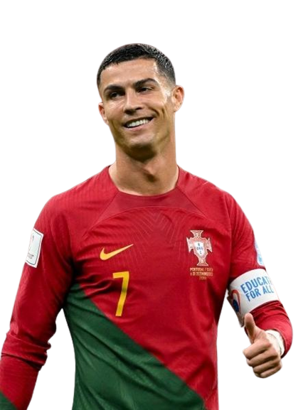
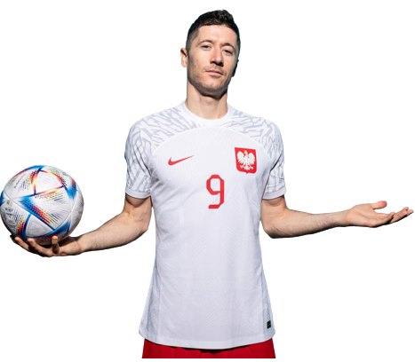
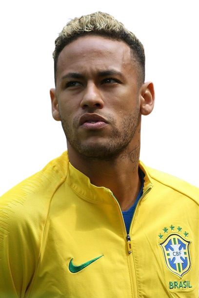
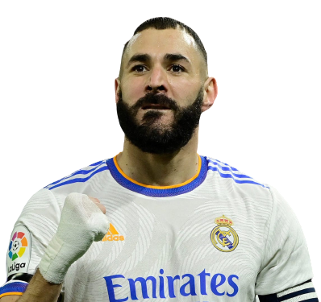
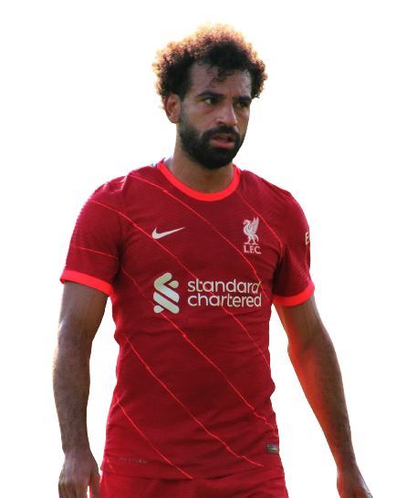
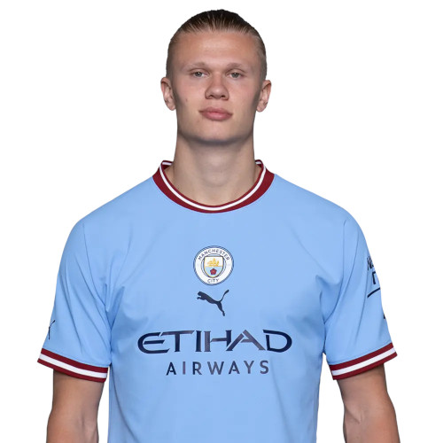
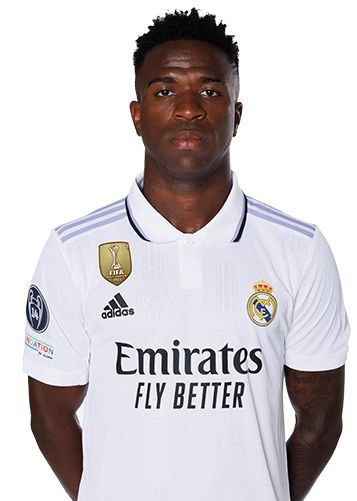

TOP 10 MELHORES DA EUROPA:
| JOGADORES | IDADE | GOLS |
|---|---|---|
| Lionel Messi | 35 Anos | 799 |
| Cristiano Ronaldo | 38 Anos | 828 |
| Robert Lewandowski | 34 anos | 628 |
|  Neymar Jr | 31 Anos | 436 |
| Karim Benzema | 35 Anos | 342 |
| Kylian Mbappé | 24 anos | 264 |
| Mohamed Salah | 30 Anos | 219 | Erling Haaland | 22 Anos | 216 |
| Vinicius Jr | 22 Anos | 56 |
 Victor Osimhen Victor Osimhen |
24 anos | 25 |